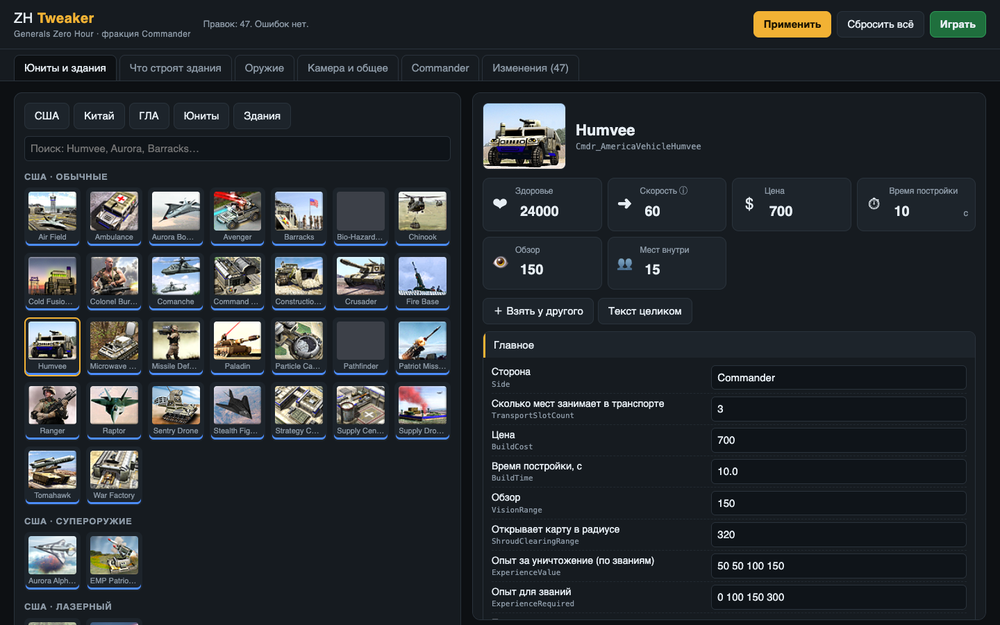
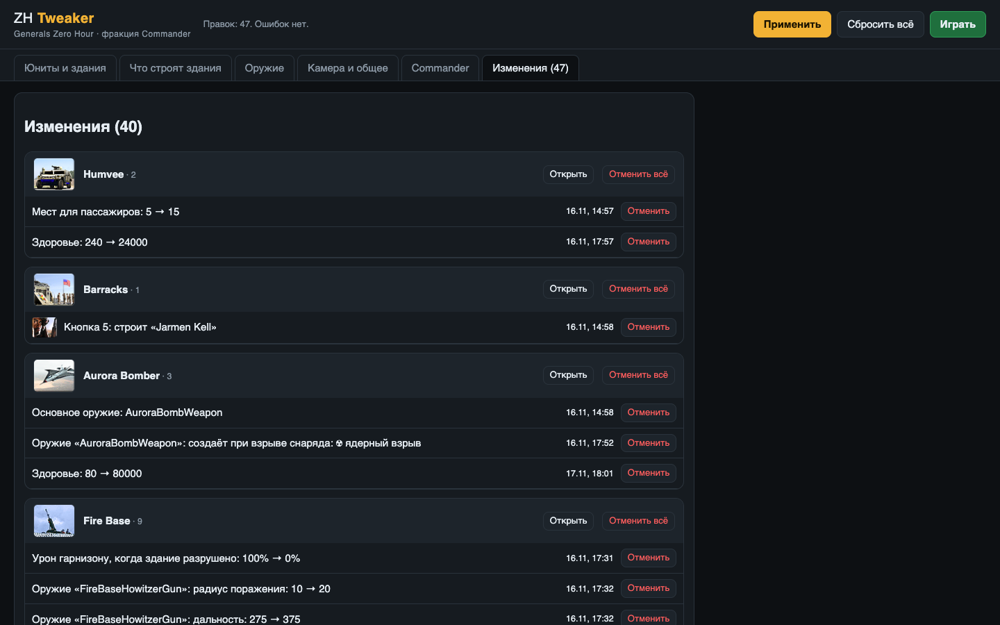

Меняйте любых юнитов Generals Zero Hour на Маке
ZH Tweaker — бесплатный редактор для Command & Conquer Generals Zero Hour, которая работает на Маке с Apple Silicon через GeneralsX. Без ручной правки INI, без Windows и без модостроения.

- Фракция Commander: все юниты, здания и способности генералов США, Китая и ГЛА
- Здоровье, скорость, цена, время постройки, обзор, места в транспорте, энергия и доход в один клик
- Замена оружия, урон, дальность, перезарядка, снаряды
- Любое здание может строить любой юнит
- Высота камеры до 690
- Дым ракет и звуки оружия не пропадают в больших боях
- Список изменений по юнитам с отменой; обычные фракции и ИИ не меняются
Установка
Нужен Мак на Apple Silicon с macOS 15 или новее и Zero Hour, запущенная через GeneralsX, из своей копии игры. Откройте Терминал и вставьте:
curl -fsSL https://raw.githubusercontent.com/deanlawkz/zh-tweaker/main/install.sh | bashВ Программах появится значок ZH Tweaker. Node.js скачается сам, если его нет. Для обновления запустите ту же команду.


Вопросы и ответы
Меняет ли твикер оригинальные файлы игры?
Нет. Архивы игры (.big) только читаются. Твикер добавляет отдельные файлы ZHT_*.ini, которые движок читает поверх, а «Сбросить всё» их убирает.
Работает ли на Маке с Intel?
Нет. GeneralsX, порт Zero Hour для macOS, поддерживает только Apple Silicon.
Можно ли играть по сети с правками?
Нет, у соперника будут другие данные. Перед сетевой игрой нажмите «Сбросить всё», после неё снова «Применить».
Где взять игру для Мака?
Установите GeneralsX и скопируйте файлы Zero Hour из своей копии Steam или EA в ~/GeneralsX/GeneralsZH. В инструкции описаны SteamCMD и другие способы.
Поддерживаются ли моды Contra и The End of Days?
Пока нет, только обычная Zero Hour. Поддержка модов в планах.
Как удалить?
Выполните: curl -fsSL https://raw.githubusercontent.com/deanlawkz/zh-tweaker/main/uninstall.sh | bash
Подробная инструкция: установка, проблемы, русская версия, удаление